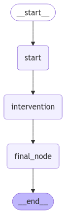

👩💻 Tema 4: Human in the Loop – Integración Humana en el Grafo
🚀 ¿Qué es Human in the Loop?
Human in the Loop (HITL) es un enfoque que permite combinar la automatización con la intervención humana en flujos de grafos.
Con LangGraph, es posible integrar HITL para:
- Revisar decisiones generadas automáticamente por el grafo.
- Incorporar intervención humana en momentos críticos.
- Proveer mayor control en aplicaciones sensibles o complejas.
Es ideal para garantizar que las decisiones sean precisas, adaptadas al contexto y cumplan con los estándares esperados.
🧠 ¿Por Qué es Importante Human in the Loop?
- Validación de Resultados: Permite revisar las decisiones del grafo antes de ejecutarlas.
- Intervención Crítica: Proporciona la flexibilidad necesaria para abordar casos complejos o sensibles.
- Control Mejorado: Combina lo mejor de los sistemas automatizados con la supervisión humana.
Este enfoque crea sistemas más confiables, eficaces y personalizables.
🌟 ¿Cómo Funciona Human in the Loop en LangGraph?
LangGraph introduce HITL mediante breakpoints, eventos y lógica personalizada en los nodos.
El flujo se detiene en puntos clave del grafo para permitir:
1. Revisión de datos por parte del usuario.
2. Modificación de parámetros o validaciones.
3. Reanudación del flujo con los cambios realizados.
🛠️ Ejemplo Práctico: Incorporando Human in the Loop
En este ejemplo, configuramos un grafo que incluye un nodo de intervención humana para validar una acción antes de continuar.
Paso 1: Configuración del Grafo con Intervención Humana
El primer paso es definir un grafo con nodos que permitan:
- Procesar la entrada inicial.
- Detenerse en un punto crítico para solicitar intervención humana.
- Continuar el flujo según la respuesta recibida.
from langgraph.graph import StateGraph, START, END
from langchain_core.messages import HumanMessage, AIMessage
from langgraph.checkpoint.memory import MemorySaver
from langgraph.types import Command, interrupt
from typing_extensions import TypedDict
class State(TypedDict):
input: str
user_feedback: str
respuesta: str
# Nodo de procesamiento inicial
def initial_node(state):
print("---Nodo inicial: procesando datos.---")
return state
# Nodo de intervención humana
def human_intervention(state):
print("---⏸️ Intervención humana requerida.---")
feedback = interrupt("Deseas validar esta acción?: (SI/NO)")
return {"user_feedback": feedback} # Aquí el humano puede validar o modificar el estado
# Nodo de continuación
def final_node(state):
print("---▶️ Nodo final: completando el flujo.---")
if state["user_feedback"] == "SI":
state["respuesta"] = "El usuario ha validado la acción"
else:
state["respuesta"] = "El usuario NO ha validado la acción"
return state
# Configuración del grafo
builder = StateGraph(State)
builder.add_node("start", initial_node)
builder.add_node("intervention", human_intervention)
builder.add_node("final_node", final_node)
builder.add_edge(START, "start")
builder.add_edge("start", "intervention")
builder.add_edge("intervention", "final_node")
builder.add_edge("final_node", END)
memory = MemorySaver()
# Compilar el grafo
graph_with_hitl = builder.compile(checkpointer=memory)
from IPython.display import Image, display
display(Image(graph_with_hitl.get_graph(xray=True).draw_mermaid_png()))

Nota
En este ejemplo:
- Usamos el método interrupt para pausar el flujo en el nodo de intervención.
- Integramos una memoria persistente (MemorySaver) para garantizar que el grafo recuerde su estado durante las interrupciones.
Paso 2: Pausando el Grafo para la Intervención
Cuando ejecutamos el grafo, este se detiene en el nodo de intervención humana, enviando un mensaje al usuario para validar la acción.
initial_input = {"input": "Felicitar a Raul por el curso."}
thread = {"configurable": {"thread_id": "1"}}
events = []
# Ejecutamos el grafo hasta el punto de intervención
for event in graph_with_hitl.stream(initial_input, thread, stream_mode="updates"):
print(event)
events.append(event)
print("\n")
---Nodo inicial: procesando datos.---
{'start': {'input': 'Felicitar a Raul por el curso.'}}
---⏸️ Intervención humana requerida.---
{'__interrupt__': (Interrupt(value='Deseas validar esta acción?: (SI/NO)', resumable=True, ns=['intervention:81d7c2a0-7cc5-cdd4-a7d9-aeedd3aa2944'], when='during'),)}
El grafo responde con un objeto Interrupt, que contiene el mensaje para el usuario.
Podemos mostrar este mensaje usando el siguiente fragmento:
# Mostramos el mensaje de nuestro Interrupt.
for event in events:
if '__interrupt__' in event: # Verificamos si el evento tiene un '__interrupt__'
interrupt_obj = event['__interrupt__'][0] # Obtenemos el objeto Interrupt
# Formateamos y mostramos la información
formatted_output = f"Interrupt Message: {interrupt_obj.value}"
print(formatted_output.strip())
Nota
Este punto es esencial para integrar la intervención humana en tu aplicación, ya que el mensaje de Interrupt es lo que el sistema envía al usuario para interactuar.
Paso 3: Comprobando el estado actual
Para asegurarnos de que el grafo está detenido correctamente en el nodo esperado, podemos consultar su estado con get_state:
# Comprobamos que realmente esta pendiente de intervención.
state = graph_with_hitl.get_state(thread)
state.next
Esto confirmará que el grafo está bloqueado en el nodo intervention, esperando la respuesta del usuario.
Paso 4: Reanudando el Flujo Tras la Intervención
Después de que el usuario responde a la consulta, reanudamos el flujo desde el punto donde se detuvo.
# Continuamos con la ejecución del grafo agregando nuestra respuesta.
# Podeis probar respondiendo un "NO" para ver el caso contrario.
#for event in graph_with_hitl.stream(Command(resume="NO"), thread, stream_mode="updates"):
for event in graph_with_hitl.stream(Command(resume="SI"), thread, stream_mode="updates"):
print(event)
events.append(event)
print("\n")
---⏸️ Intervención humana requerida.---
{'intervention': {'user_feedback': 'SI'}}
---▶️ Nodo final: completando el flujo.---
{'final_node': {'input': '¿Esta decisión es correcta?', 'user_feedback': 'SI', 'respuesta': 'El usuario ha validado la acción'}}
💡 Truco: Usamos el objeto Command para enviar la respuesta del usuario al grafo, lo que permite continuar el flujo.
Nota
La integración de HITL en una aplicación requiere considerar dos puntos clave:
1. Inicio del Flujo: Inicia el grafo con la entrada del usuario.
2. Continuación del Flujo: Reanuda el grafo desde donde se detuvo, enviando la respuesta del usuario.
Esto implica que tu aplicación debe tener dos endpoints para interactuar con el grafo:
- Endpoint Inicial: Para iniciar el flujo (por ejemplo, miapp.com/start).
- Endpoint Continuación: Para reanudar el flujo tras la intervención (por ejemplo, miapp.com/continue).
🎯 Casos de Uso Reales
- Revisión de Decisiones Automatizadas: Garantizar que las decisiones cumplen con estándares antes de ejecutarlas.
- Procesos Empresariales Sensibles: Validación humana en flujos que manejan datos financieros o legales.
- Personalización: Incorporar preferencia o experiencia humana para mejorar la experiencia del usuario.
🧑🏫 ¿Qué Hemos Aprendido?
- Human in the Loop: Cómo integrar intervención humana en un grafo automatizado.
- Intervención Dinámica: Detener el flujo, solicitar validaciones y reanudar según las respuestas recibidas.
- Aplicación Práctica: Implementar control humano en flujos críticos y mejorar la confiabilidad de los sistemas automatizados.
✨ Conclusión
Human in the Loop (HITL) es una funcionalidad esencial para equilibrar la automatización y el control humano en flujos de trabajo complejos.
A lo largo de este tema, hemos visto cómo LangGraph permite integrar puntos de intervención humana para garantizar:
- Decisiones Validas: Validación de resultados automatizados en tiempo real.
- Flexibilidad Dinámica: Capacidad de detener, modificar y reanudar flujos según las necesidades del usuario.
- Control Personalizado: Mayor confiabilidad en procesos críticos o sensibles.
HITL no solo mejora la precisión de los sistemas automatizados, sino que también los hace más adaptables y orientados al usuario, permitiendo una colaboración más eficiente entre humanos y tecnología.
🔎 Recursos:
- Ver notebook en Google Colab
- Ejemplo avanzado para pedir permiso al usuario de uso de herramientas: Google Colab
 Definición del concepto: Human-in-the-loop
Definición del concepto: Human-in-the-loop- How-to-guide: Humman-approval
🌐 ¿Qué es lo Siguiente?
En el próximo tema, exploraremos Paralelismo, una técnica clave para optimizar flujos mediante la ejecución simultánea de nodos. Veremos cómo dividir tareas en paralelo, consolidar resultados y mejorar la eficiencia en grafos complejos.